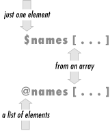
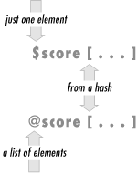

17.6 Slices
It often
happens that we need to work with only a few elements from a given
list. For example, the Bedrock Library keeps information about their
patrons in a large file. Each
line in the file describes one patron with six colon-separated
fields: a person's name, library card number, home address,
home phone number, work phone number, and number of items currently
checked out. A little bit of the file looks something like this:
fred flintstone:2168:301 Cobblestone Way:555-1212:555-2121:3
barney rubble:709918:3128 Granite Blvd:555-3333:555-3438:0
One of the library's applications needs only the card numbers
and number of items checked out; it doesn't use any of the
other data. It could use code something like this to get only the
fields it needs:
while (<FILE>) {
chomp;
my @items = split /:/;
my($card_num, $count) = ($items[1], $items[5]);
... # now work with those two variables
}
But the array @items isn't needed for
anything else; it seems like a waste.
Maybe it would be better to assign the result of
split to a list of scalars, like this:
my($name, $card_num, $addr, $home, $work, $count) = split /:/;
Well, that avoids the unneeded array
@items—but now we have four scalar variables
that we didn't really need. For this situation, some people
used to make up a number of dummy variable names, like
$dummy_1, that showed that they really
didn't care about that element from the
split. But Larry thought that that was too much
trouble, so he added a special use of
undef. If
an item in a list being assigned to is undef, that
means simply to ignore the corresponding element of the source list:
my(undef, $card_num, undef, undef, undef, $count) = split /:/;
Is this any better? Well, it has an advantage that there aren't
any unneeded variables. But it has the disadvantage that you have to
count undefs to tell which element is
$count. And this becomes quite unwieldy if there
are more elements in the list. For example, some people who wanted
just the mtime value from stat were writing code
like this:
my(undef, undef, undef, undef, undef, undef, undef,
undef, undef, $mtime) = stat $some_file;
If you use the wrong number of undefs,
you'll get the atime or ctime by mistake, and that's a
tough one to debug. There's a better way: Perl can index into a
list as if it were an array. This is a list
slice. Here, since the mtime is item 9
in the list returned by stat, we can
get it with a subscript:
my $mtime = (stat $some_file)[9];
Those parentheses are required around the list of items (in this
case, the return value from stat). If you wrote it
like this, it wouldn't work:
my $mtime = stat($some_file)[9]; # Syntax error!
A list slice has to have a subscript expression in square brackets
after a list in parentheses. The parentheses holding the arguments to
a function call don't count.
Going back to the Bedrock Library, the list we're working with
is the return value from split. We can now use a
slice to pull out item 1 and item
5 with subscripts:
my $card_num = (split /:/)[1];
my $count = (split /:/)[5];
Using a scalar-context slice like this (pulling just a single element
from the list) isn't bad, but it would be more efficient and
simpler if we didn't have to do the split
twice. So let's not do it twice; let's get both values at
once by using a list slice in list context:
my($card_num, $count) = (split /:/)[1, 5];
The indices pull out element 1 and element
5 from the list, returning those as a two-element
list. When that's assigned to the two my
variables, we get exactly what we wanted. We do the
slice just once, and we set the two variables with
a simple notation.
A slice is often the simplest way to pull a few items from a list.
Here, we can pull just the first and last items from a list, using
the fact that index -1 means the last
element:
my($first, $last) = (sort @names)[0, -1];
The subscripts of a slice may be in any order and may even repeat
values. This example pulls five items from a list of ten:
my @names = qw{ zero one two three four five six seven eight nine };
my @numbers = ( @names )[ 9, 0, 2, 1, 0 ];
print "Bedrock @numbers\n"; # says Bedrock nine zero two one zero
17.6.1 Array Slice
That previous example could be made even simpler. When slicing
elements from an
array (as opposed to a list), the
parentheses aren't needed. So we could have done the slice like
this:
my @numbers = @names[ 9, 0, 2, 1, 0 ];
This isn't merely a matter of omitting the parentheses; this is
actually a different notation for accessing array elements: an
array slice. Earlier (in Chapter 3), we said that the at-sign on
@names meant "all of the elements."
Actually, in a linguistic sense, it's more like a plural
marker, much like the letter "s" in words like
"cats" and "dogs." In Perl, the dollar sign
means there's just one of something, but the at-sign means
there's a list of items.
A slice is always a list, so the array slice notation uses an at-sign
to indicate that. When you see something like @names[ ...
] in a Perl program, you'll need to do just as Perl
does and look at the at-sign at the beginning as well as the square
brackets at the end. The square brackets mean that you're
indexing into an array, and the at-sign means that you're
getting a whole list
of elements, not just a single one (which is what the dollar sign
would mean). See Figure 17-1.

The punctuation mark at the front of the variable reference (either
the dollar sign or at-sign) determines the context of the subscript
expression. If there's a dollar sign in front, the subscript
expression is evaluated in a scalar context to get an index. But if
there's an at-sign in front, the subscript expression is
evaluated in a list context to get a list of indices.
So we see that @names[ 2, 5 ] means the same list
as ($names[2], $names[5]) does.
If you want that list of values, you can simply use the array slice
notation. Any place you might want to write the list, you can instead
use the simpler array slice.
But the slice can be used in one place where the list can't: a
slice may be interpolated directly into a string:
my @names = qw{ zero one two three four five six seven eight nine };
print "Bedrock @names[ 9, 0, 2, 1, 0 ]\n";
If we were to interpolate @names, that would give
all of the items from the array, separated by spaces. If instead we
interpolate @names[ 9, 0, 2, 1, 0 ], that gives
just those items from the array, separated by spaces.
Let's go back to the Bedrock Library for a moment. Maybe now
our program is updating Mr. Slate's address and phone number in
the patron file, because he just moved into a large new place in the
Hollyrock hills. If we've got a list of information about him
in @items, we could do something like this to
update just those two elements of the array:
my $new_home_phone = "555-6099";
my $new_address = "99380 Red Rock West";
@items[2, 3] = ($new_address, $new_home_phone);
Once again, the array slice makes a more compact notation for a list
of elements. In this case, that last line is the same as an
assignment to ($items[2],
$items[3]), but more compact and efficient.
17.6.2 Hash Slice
In a way exactly analogous to an array slice, we can also slice some
elements from a hash in a hash
slice. Remember when three of our characters went
bowling, and we kept their bowling scores in the
%score hash? We could pull those scores with a
list of hash elements or with a slice. These two techniques are
equivalent, although the second is more concise and efficient:
my @three_scores = ($score{"barney"}, $score{"fred"}, $score{"dino"});
my @three_scores = @score{ qw/ barney fred dino/ };
A slice is always a list, so the hash slice notation uses an at-sign
to indicate that. When you see something like @score{ ...
} in a Perl program, you'll need to do just as Perl
does and look at the at-sign at the beginning as well as the curly
braces at the end. The curly braces mean that you're indexing
into a hash; the at-sign means that you're getting a whole list
of elements, not just a single one (which is what the dollar sign
would mean). See Figure 17-2.

As we saw with the array slice, the punctuation mark at the front of
the variable reference (either the dollar sign or at-sign) determines
the context of the subscript expression. If there's a dollar
sign in front, the subscript expression is evaluated in a scalar
context to get a single key. But if there's an at-sign in front, the
subscript expression is evaluated in a list context to get a list of
keys.
It's normal at this point to wonder why there's no
percent sign ("%") here, when
we're talking about a hash. That's the marker that means
there's a whole hash; a hash slice (like any other slice) is
always a list, not a hash. In Perl, the dollar sign means
there's just one of something, but the at-sign means
there's a list of items, and the percent sign means
there's an entire hash.
As we saw with array slices, a hash slice may be used instead of the
corresponding list of elements from the hash, anywhere within Perl.
So we can set our friends' bowling scores in the hash (without
disturbing any other elements in the hash) in this simple way:
my @players = qw/ barney fred dino /;
my @bowling_scores = (195, 205, 30);
@score{ @players } = @bowling_scores;
That last line does the same thing as if we had assigned to the
three-element list ($score{"barney"}, $score{"fred"},
$score{"dino"}).
A hash slice may be interpolated, too. Here, we print out the scores
for our favorite bowlers:
print "Tonight's players were: @players\n";
print "Their scores were: @score{@players}\n";
|